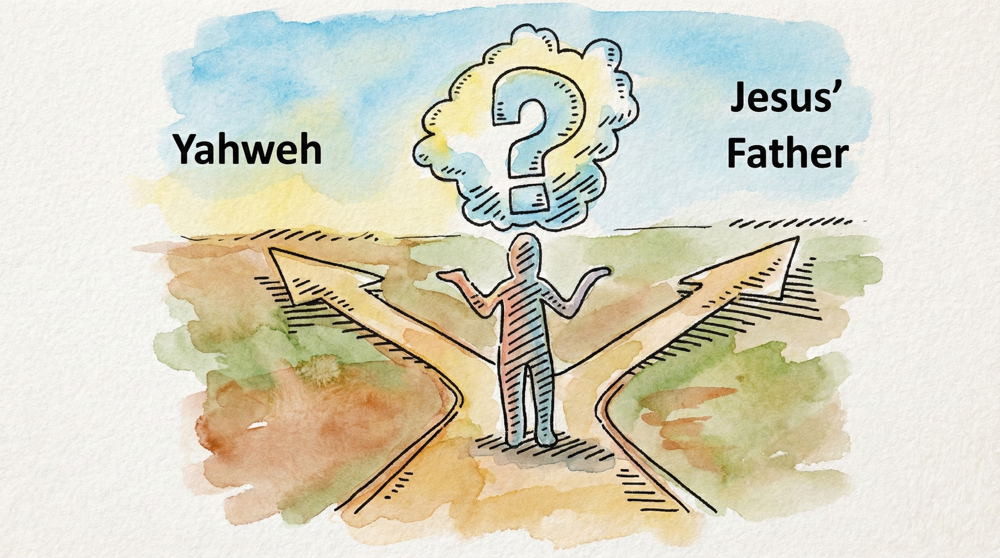
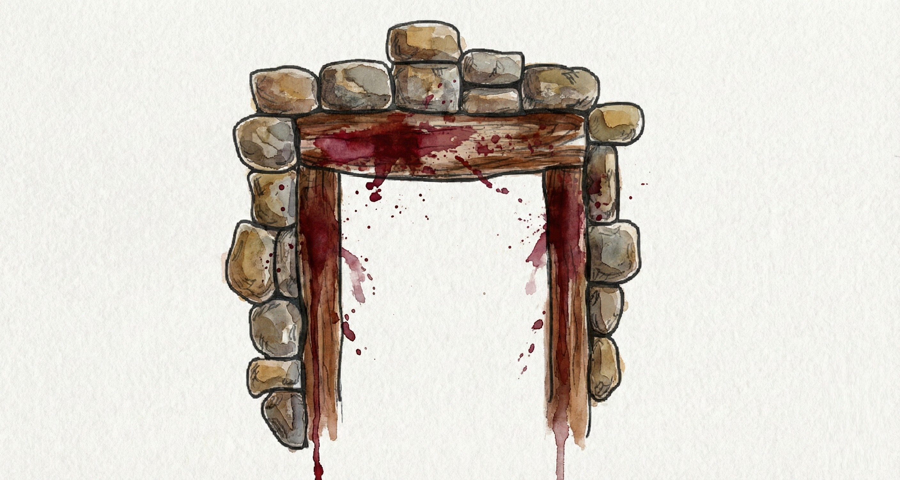
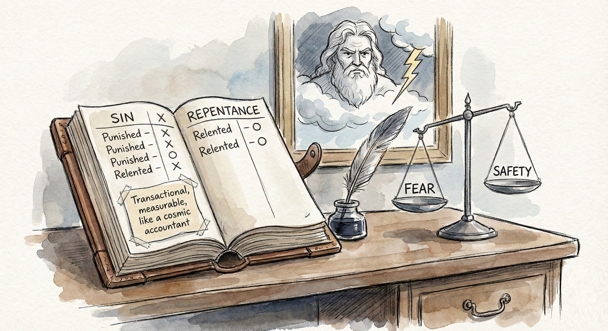
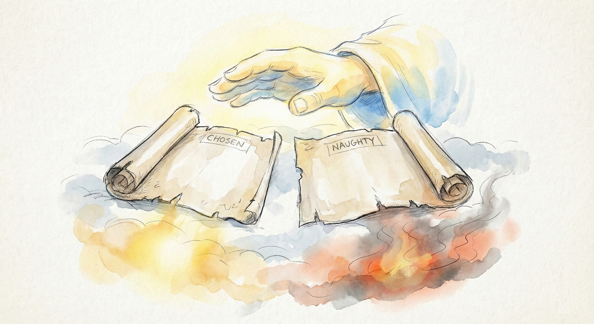
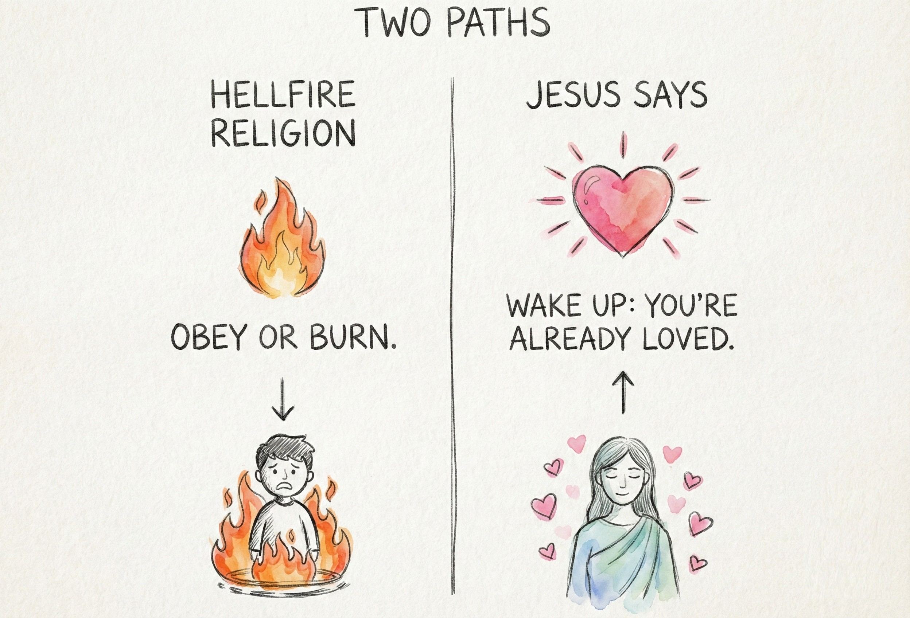

"The Father judges no one." - John 5:22
There are two voices echoing through Scripture.
One thunders, "Slay every man, woman, and child."
The other whispers, "Father, forgive them. They don't know what they're doing."
And for two thousand years, the Church has tried to make them sound like the same person.
If you'd lived under the old covenant, you'd have met a God who kills first and explains later.
He floods the world, orders genocide, burns cities, opens the earth to swallow dissenters. Check out this short list of some of his commands and decide whether the author of these commands loves humans.
His followers march with swords and claim it's holy.
He's called Yahweh, Jehovah, the Lord of Hosts ... and His glory smells of smoke.
People feared Him, but they didn't love Him.
How could they?
Love doesn't coexist with the constant threat of annihilation.
And yet religion called it obedience.
Then Jesus stepped onto the stage.
He didn't come with thunder.
He came with calloused hands and dusty feet.
He fed enemies. He touched the untouchable. He spoke of a Father whose rain falls on both the wicked and the just.
And suddenly the world saw something it had never seen before:
a God who doesn't need violence to prove His holiness.
He called that God Father.
Not king. Not judge. Not even master. And certainly NOT YAHWEH!
Just Father.
As mentioned at the end of the previous chapter, when His disciples wanted to destroy a Samaritan village with fire from heaven, just like Elijah had done, Jesus rebuked them:
That line alone dismantles centuries of theology.
Jesus didn't just bring a new message; He exposed an old illusion.
He said, "The Father judges no one."
Let that sink in.
NO ONE.
Every Old Testament judgment, every massacre claimed in God's name. Jesus was pulling the curtain back on the human projection behind it.
People had blamed their violence on heaven.
He told His followers, "You have heard it said, 'An eye for an eye,' but I say to you, do not resist an evil person."
He was rewriting the script, line by line.
Not because God had changed... but because humanity had finally met the REAL AUTHOR.
The Father Jesus revealed doesn't live in temples or books.
He doesn't demand sacrifices, He ends them.
God is saying quite clearly "If anyone told you to kill lambs and sprinkle the blood on doorposts, IT WAS NOT ME!"
He doesn't trade mercy for blood; He bleeds to end the trade.
When His enemies nailed Him to wood, He prayed for them: not because it was strategic, but because that's who the Father is.
"Love your enemies," He said,
"that you may be children of your Father in heaven."
The proof of divine sonship, in Jesus' logic, isn't holiness through rule-keeping.
It's compassion toward the undeserving.
So if our "God" still burns His enemies, maybe we're still worshipping the old one.
It's hard to let go of the God we grew up fearing.
He felt safe, in a twisted way. Predictable. Retributive.
If we sinned, He punished. If we repented, He relented.
Transactional, measurable, like a cosmic accountant.
But Jesus asks for something more dangerous: TRUST.
Trust that love is stronger than law.
Trust that mercy doesn't make God weak.
Trust that judgment is not revenge but restoration.
That kind of trust feels like freefall at first.
It's letting go of the railings of religion and discovering that what holds you is invisible, but real.
When Jesus spoke of "fire," it was always cleansing.
The fire that purifies gold, the baptism of fire that transforms hearts, the light that exposes darkness.
When He warned of Gehenna, He wasn't describing an eternal torture chamber.
He was warning His generation about the national collapse their hatred would bring: Jerusalem's coming destruction.
The judgment He spoke of wasn't cosmic condemnation; it was truth unveiled.
Whenever love shines on fear, fear feels like burning.
That's the only fire Jesus ever promised: the fire of reality.
When Philip asked, "Show us the Father," Jesus didn't hesitate.
That sentence rewrote theology forever.
No more contradictions. No more guessing games.
The character of God is not a collage of verses: it's a single face.
If anything in Scripture contradicts the compassion of Jesus,
it doesn't reveal God: it reveals our misunderstanding of Him.
Jesus burned the idea of divine favoritism. God does not have lists of names of 'the chosen ones', predestined not to burn, and a separate 'naughty list' for roasting. That was the twisted doctrine of someone (Paul) who had been deceived by a light-being pretending to be Jesus.
Jesus burned down the altar of retribution.
He burned the ledger that kept track of sins and sacrifices.
He turned the word repent from self-loathing into awakening.
He turned judgment from damnation into healing.
He turned obedience from fear into love.
When the Father spoke from heaven saying "This is my beloved Son; listen to Him", He wasn't adding another voice. He was replacing all the others.
In the end, Jesus left us with NO SAFE MIDDLE GROUND.
Either God is love, or God is a monster with good PR.
There's no third option.
If we claim to follow Jesus but still worship the punishing god He came to expose,
we've missed the point of his teachings.
The cross wasn't divine wrath unleashed: it was divine innocence revealed.
It wasn't God demanding blood; it was God enduring ours.
Hellfire religion says, "Obey or burn."
Jesus says, "Wake up: you're already loved."
Jesus didn't come to save us from God.
He came to save us from what we'd believed about God.
The punishing deity we inherited was never the Father of Jesus.
And once we see the difference, there's no going back.
The next chapter will explore how fear crept back in: how Paul and the early theologians reinstalled the very dread Jesus had dismantled.
But before we go there, hold this truth close:
The only fire God sends is the fire that makes hearts new.
The only judgment He brings is the one that heals.
And the only thing He ever punishes is the lie that He could be anything less than love.